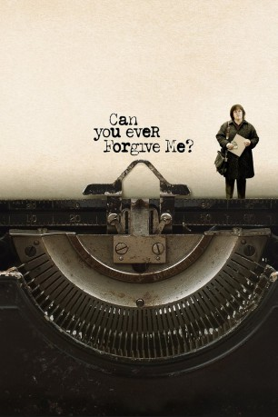

#10655 Can You Ever Forgive Me?
Auszeichnungen: für 3 Oscars nominiert
 
 IMDB-Wertung: 7.3 / 10
IMDB-Wertung: 7.3 / 10  Tomatometer: 98
Tomatometer: 98  Metascore: 87
Metascore: 87 
Lee Israel ist eine angesehene Biografin. Doch nach ein paar missglückten Arbeitsentscheidungen steht sie vor dem finanziellen Bankrott. Sie ist mit ihrer Miete im Rückstand, hat nichts zu essen im Kühlschrank und kann sich die lebensnotwendige Tierarztbehandlung für ihre Katze nicht leisten. Als sie mitbekommt, wie viel Geld einige Menschen bereit sind, für Briefe prominenter Persönlichkeiten zu bezahlen, schmiedet sie einen Plan: Lee fälscht ein Schriftstück der Schauspielerin Fanny Brice und bietet es einem Antiquitätengeschäft an, welches die Fälschung dankend abkauft und sie damit vor dem finanziellen Ruin bewahrt. Von jetzt an kann die Biografin nichts mehr stoppen und sie verkauft weitere gefälschte Schriften als Sensation. Nachdem ihr bester Freund Jack Hock (Richard E. Grant) in das lukrative Geschäft einsteigt, wird Lee eines Tages aber unvorsichtig und greift zu drastischen Mitteln...
Jahr: 2018
Dauer: 107 Minuten
FSK: 0
Land: USA Studio: Fox Searchlight PicturesTonspuren: DD5.1 - ,
Untertitel: Deutsch, Englisch,
Auflösung: 1080p (1920x800) Größe: 4239 MB
Genre: Drama, Komödie, Krimi, Biographie
Regisseur: Marielle Heller
Drehbuch: Nicole Holofcener, Jeff Whitty
Soundtrack: Nate Heller
Darsteller:
 Melissa McCarthy als Lee Israel
Melissa McCarthy als Lee Israel Richard E. Grant als Jack Hock
Richard E. Grant als Jack Hock Dolly Wells als Anna
Dolly Wells als Anna Ben Falcone als Alan Schmidt
Ben Falcone als Alan Schmidt- Gregory Korostishevsky als Andre
 Jane Curtin als Marjorie
Jane Curtin als Marjorie Stephen Spinella als Paul
Stephen Spinella als Paul- Christian Navarro als Kurt
 Pun Bandhu als Agent Doyle
Pun Bandhu als Agent Doyle Erik LaRay Harvey als Agent Solonas
Erik LaRay Harvey als Agent Solonas- Brandon Scott Jones als Glen
- Shae D'lyn als Nell
- Rosal Colon als Rachel
 Anna Deavere Smith als Elaine
Anna Deavere Smith als Elaine Marc Evan Jackson als Lloyd
Marc Evan Jackson als Lloyd Marcella Lowery als Guest at Party
Marcella Lowery als Guest at Party- Roberta Wallach als Tom Clancy Groupie
 Tina Benko als Karen
Tina Benko als Karen- Sandy Rosenberg als Yale Librarian
- Kevin Carolan als Tom Clancy
- Ben Rauch als Coat Check Guy
- Ethel Fisher als Mrs. Unger
 Joanna Adler als Arlene
Joanna Adler als Arlene- Mary B. McCann als Judge
- Michael Laurence als Fenwick
 Michael Cyril Creighton als Harry
Michael Cyril Creighton als Harry- Alice Kremelberg als Server
- Moisés Acevedo als Clerk
 Lucy DeVito als Gossipy Office Worker
Lucy DeVito als Gossipy Office Worker- Josh Evans als Boss in Office
 Ricky Garcia als Security Guard
Ricky Garcia als Security Guard- Charlotte Mary Wen als Cubicle Worker
- Mx Justin Vivian Bond als Lounge Singer
- Tim Cummings als Craig
 Marmee Regine Cosico als Museum Patron
Marmee Regine Cosico als Museum Patron- Ron Maestri als Book Store Customer
 George Aloi als Literary Agent (uncredited)
George Aloi als Literary Agent (uncredited)- Tiffany Blair als Lady with Bird (uncredited)
- Kevin Cristaldi als Other Dealer (uncredited)
 Barbara Ann Davison als Bookstore Employee (uncredited)
Barbara Ann Davison als Bookstore Employee (uncredited) Julie Ann Emery als (uncredited)
Julie Ann Emery als (uncredited)- Liz Eng als Lisa (uncredited)
- Anne Hollister als Young Girl at Vet (uncredited)
- Katie Kocik als Bookstore Customer (uncredited)
 Doris McCarthy als Dinner Guest (uncredited)
Doris McCarthy als Dinner Guest (uncredited)- Wayne J. Miller als Pancake Man at Counter (uncredited)
- Chris Lamberth als Exterminator
- Marcus Choi als Another Cubicle Worker
- Havilah Brewster als Toni
- Towne The Cat als Jersey
Datei: X:\2018(A-F)\Can You Ever Forgive Me (2018, FSK0, 1920x800).mkv seit 15.02.2019
Festplatte: HD 2017(A-Z)-2018(A-F)
 Es gibt insgesamt 151 Filme in der Gruppe '2018(A-F)'
Es gibt insgesamt 151 Filme in der Gruppe '2018(A-F)'